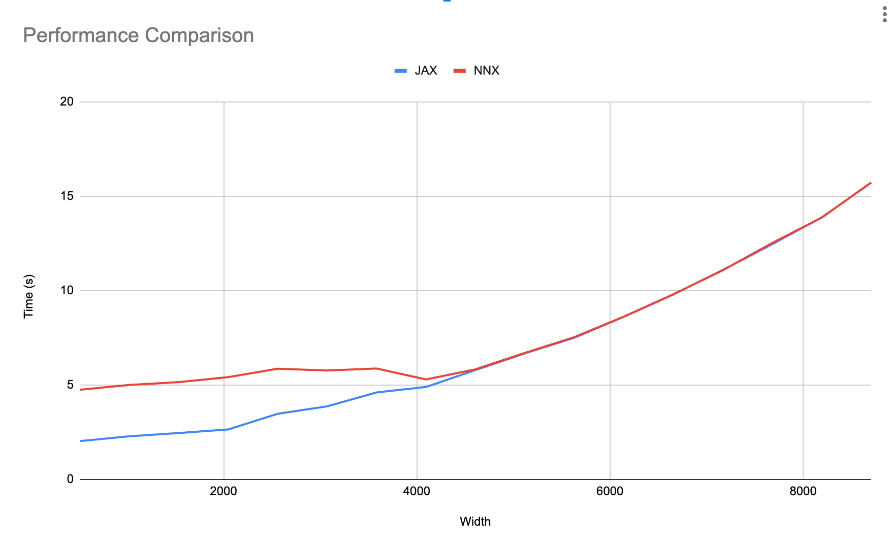

Performance considerations#
Currently, Flax nnx.jit traverses the object graph in pure Python which can add overhead. This overhead mostly affects small to medium models and can be mitigated in the following ways:
By leveraging JAX’s Asynchronous dispatch.
By using nnx.cached_partial to cache the graph node traversals.
By using a Functional training loop which stages out the graph traversals.
A full resolution might involve developing a C extension (e.g. flaxlib) to speed up some of the traversal logic in graph.py. Before we continue lets an example of a model and a simple training loop:
from flax import nnx
import jax
import jax.numpy as jnp
import optax
class Model(nnx.Module):
def __init__(self, din, dmid, dout, rngs: nnx.Rngs):
self.linear = nnx.Linear(din, dmid, rngs=rngs)
self.bn = nnx.BatchNorm(dmid, use_running_average=False, rngs=rngs)
self.dropout = nnx.Dropout(0.2, deterministic=False, rngs=rngs)
self.linear_out = nnx.Linear(dmid, dout, rngs=rngs)
def __call__(self, x):
x = nnx.relu(self.dropout(self.bn(self.linear(x))))
return self.linear_out(x)
model = Model(2, 64, 3, rngs=nnx.Rngs(0)) # eager initialization
optimizer = nnx.Optimizer(model, optax.adam(1e-3), wrt=nnx.Param)
metrics = nnx.MultiMetric(
loss=nnx.metrics.Average('loss'),
)
@nnx.jit # <== currently slow
def train_step(model, optimizer, metrics, x, y):
def loss_fn(model):
y_pred = model(x) # call methods directly
return ((y_pred - y) ** 2).mean()
loss, grads = nnx.value_and_grad(loss_fn)(model)
optimizer.update(model, grads) # in-place updates
metrics.update(loss=loss)
return loss
for _ in range(10):
x, y = jnp.ones((32, 2)), jnp.zeros((32, 3))
loss = train_step(model, optimizer, metrics, x, y)
Important thing here is that we created a train_step() function that uses nnx.jit and takes in a model, optimizer, and metrics arguments, all of which are Flax NNX objects. We’ll later see how to improve this.
Asynchronous dispatch#
Asynchronous dispatch is a feature of JAX where it runs operations in the background whenever possible so Python can continue executing other code. This can be use to absorb the cost of data loading and in this case the overhead of nnx.jit and similar transforms. In general, as the amount of computation JAX has to perform per iteration increases the more it is able to absorb the python overhead since eventually the JAX computation will be the main blocker and programs with different overhead will have the same performance. This could be achieved in a couple of ways:
Increasing the batch size.
Increasing the model size.
Performing more JAX steps per python step if data loading is fast enough.
To demonstrate this, the graph below which shows total time of running benchmarks/nnx_simple_training.py for both jax.jit and nnx.jit with different model sizes:

As we can observe, after a certain model size both jax.jit and nnx.jit converge to the same runtime cost. This means we don’t have to modify our training loop above.
Caching graph node traversals#
The simplest way to get rid of the traversal overhead entirely is by using nnx.cached_partial to convert a transformed function and the input graph objects into a partial function which caches the graph object and just expects the remaining arguments. In this example we use nnx.cached_partial over train_step and partially apply model, optimizer, and metrics, to create cached_train_step. Then we simply update our training loop to use cached_train_step which only expects the x and y inputs:
cached_train_step = nnx.cached_partial(train_step, model, optimizer, metrics)
for _ in range(10):
x, y = jnp.ones((32, 2)), jnp.zeros((32, 3))
loss = cached_train_step(x, y)
Note that cached_partial will enforce that the structure of the graph nodes doesn’t change during train_step (no mutations except for Variable state update) so the cache is guaranteed to be up-to-date and we can avoid costly checks which require traversals. This is actually what is expected for most step functions as making any change here would imply costly recompilation, so enforcing this might be a secondary feature that could be useful for this purpose.
Similarly, to prevent the user from mutating the cached objects outside, cached_partial creates a copy of all the graph nodes but, to allow state to be propagated to the original objects, they share references to the same Variables.
Functional training loop#
To remove the Python overhead we can create a functional training loop that uses regular jax.jit in combination with nnx.split and nnx.merge to stage out the traversal logic. Concretely we can use nnx.split before the training loop to create a single graphdef and state pytrees for all the graph nodes. Then we change train_step() to accept graphdef and state, and use nnx.merge to recreate the objects inside, and either nnx.split or nnx.state at the end to get the output state. At the end of the training loop or whenever needed we can use nnx.update to update the objects to the current state.
# split before training loop
graphdef, state = nnx.split((model, optimizer, metrics))
@jax.jit # regular JAX
def jax_train_step(graphdef, state, x, y):
# merge at the beginning of the function
model, optimizer, metrics = nnx.merge(graphdef, state)
def loss_fn(model):
y_pred = model(x) # call methods directly
return ((y_pred - y) ** 2).mean()
loss, grads = nnx.value_and_grad(loss_fn)(model)
optimizer.update(model, grads)
metrics.update(loss=loss)
state = nnx.state((model, optimizer, metrics))
return loss, state
for _ in range(10):
x, y = jnp.ones((32, 2)), jnp.zeros((32, 3))
loss, state = jax_train_step(graphdef, state, x, y)
# update objects after training
nnx.update((model, optimizer, metrics), state)
Notice that we only need to do this for jit, the use of other Flax transforms like nnx.value_and_grad inside train_step doesn’t have any performance cost since jit will make sure this only traced once.